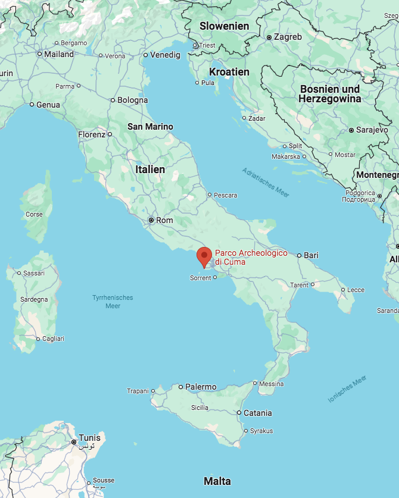

Höhle der Sybille
Wurde im 6. Jh. v. Chr. von den Etruskern erbaut
Liegt westlich von Neapel (Magna Graecia)
Bestand aus einem 130m langem trapezförmigen Tunnel,
welcher zudem zahlreiche Querarme, Zisternen und Belüftungsschächte besitzt
Weiter
